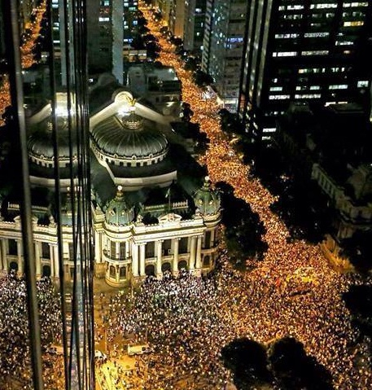
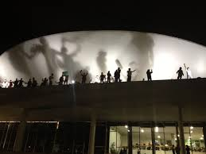

17 de junho(){
Notícias
No dia 17 de junho, mais de 200 mil pessoas foram para as ruas de onze capitais: Belo Horizonte, Belém, Brasília, Curitiba, Fortaleza, Maceió, Porto Alegre, Rio de Janeiro, Salvador, São Paulo e Vitória, além das cidades do interior.

Manifestação do Rio de Janeiro
No Rio de Janeiro mais de 100 mil pessoas ocuparam importantes vias da capital fluminense, como a avenida Rio Branco. Houve confronto entre os manifestantes e a polícia, onde alguns manifestantes vandalizaram atirando pedras, coquetéis Molotov, e rojões contra a Assembléia Legislativa – um dos lugares onde os manifestantes se concentraram. Os policiais reagiram com gás lacrimogêneo, balas de borracha e spray de pimenta.
Em São Paulo, aproximadamente 65 mil pessoas participaram ocupando a Marginal Pinheiros, a ponte Octavio Frias de Oliveira e as avenidas Paulista, Faria Lima e Luís Carlos Berrini, se concentrando no Palácio dos Bandeirantes. Não houve vandalismo nem confronto com a polícia.
Em Belo Horizonte, pelo menos 30 mil pessoas ocuparam as ruas. Segundo um dos ativistas, houve confronto com manifestantes no campus da Universidade Federal de Minas Gerais e com os manifestantes que tentaram furar o cerco policial que impedia a multidão de se aproximar do estádio Mineirão, onde as seleções de futebol Nigéria e Taiti jogavam pela Copa das Confederações. Alguns manifestantes se feriram com estilhaços, balas de borracha e gás lacrimogêneo, sendo que, segundo o comando da PM, estas munições não deveriam ter sido utilizadas na ocasião.

Manifestantes no teto do Congresso Nacional em Brasília
Em Brasília, cerca de 10 mil pessoas participaram. O protesto seguiu pela Esplanada dos Ministérios, centenas de ativistas subiram a rampa e ocuparam o teto do Congresso Nacional
Em Fortaleza, 3 mil pessoas percorreram as ruas do centro da cidade, terminando em frente ao hotel onde a seleção brasileira de futebol estava hospedada.
Em Porto Alegre, aproximadamente 10 mil manifestantes foram reunidos. Um ônibus foi destruído e a polícia respondeu com gás lacrimogêneo. 43 pessoas foram presas.
Referências:
}